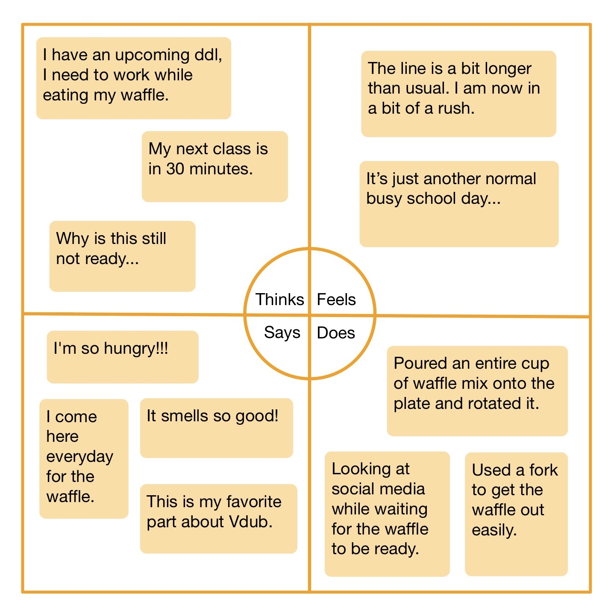
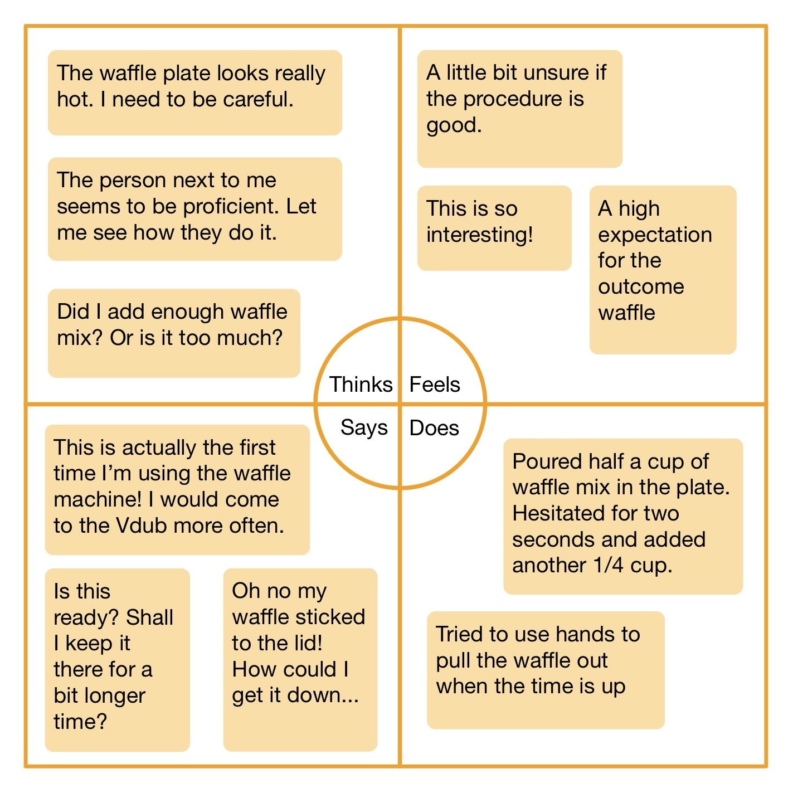

Located at the Vdub Dining Hall, the waffle machines allow students to make fresh waffles by themselves. This project seeks to study students' experience with the waffle machines through observation and interviews. Based on the waffle machine users, I created personas and illustrated the interaction with a storyboard.
A student who comes to Vdub every day for breakfast. Making a delicious warm waffle is the first thing in her daily routine. Sophie represents people who use the waffle machine frequently and are familiar with the process.
The problem Sophie face is that the waffle takes some time to get fully cooked. When Sophie wakes up late, she would get a bit rushed to wait in the line to get to use the machine, plus another 2.5 minutes for the waffle to be fully cooked
A first-year student who meets up with a friend in the evening at the Vdub, the farthest dining hall from her dorm. He did not know there are waffle machines at Vdub and decided to try it. Fred represents first-time users of the waffle machine who have trouble using the waffle machine.
The problem Fred runs into is that he puts in too much batter so the waffle sticks to the iron plate. He had to require help from the Vdub staffs to help getting the waffle out. Although the operations are quite intuitive, there are no official instructions for the first-time users. Something speaking from experience such as getting the right amount of batter, or taking the waffle out could be confusing for the first-time users.
